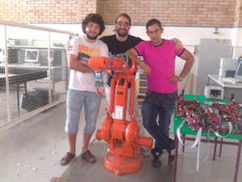
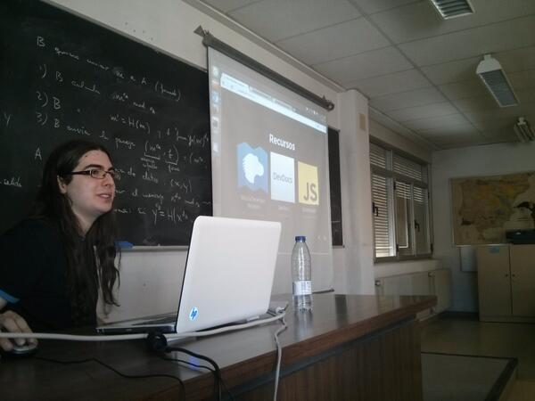
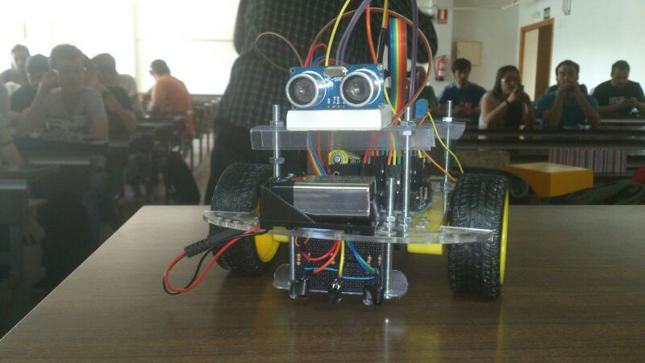
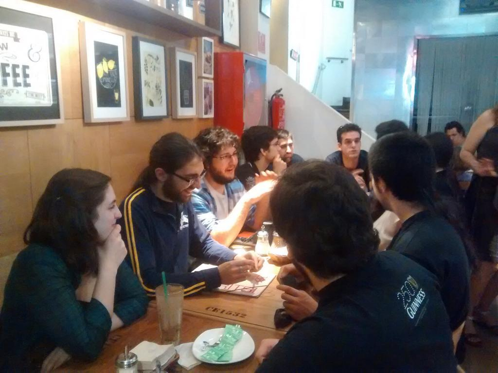
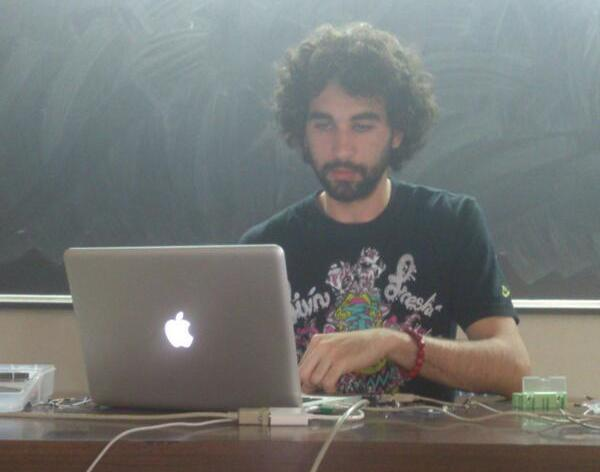
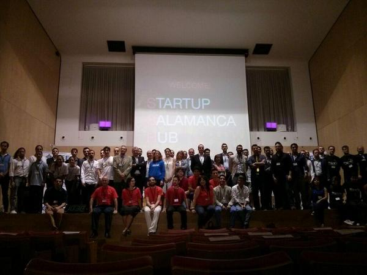
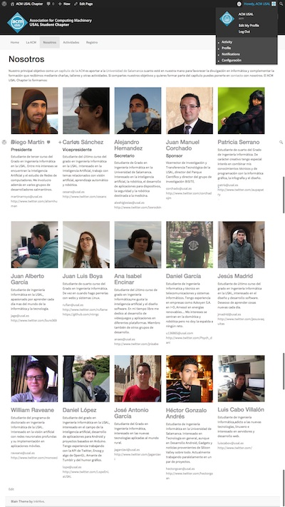
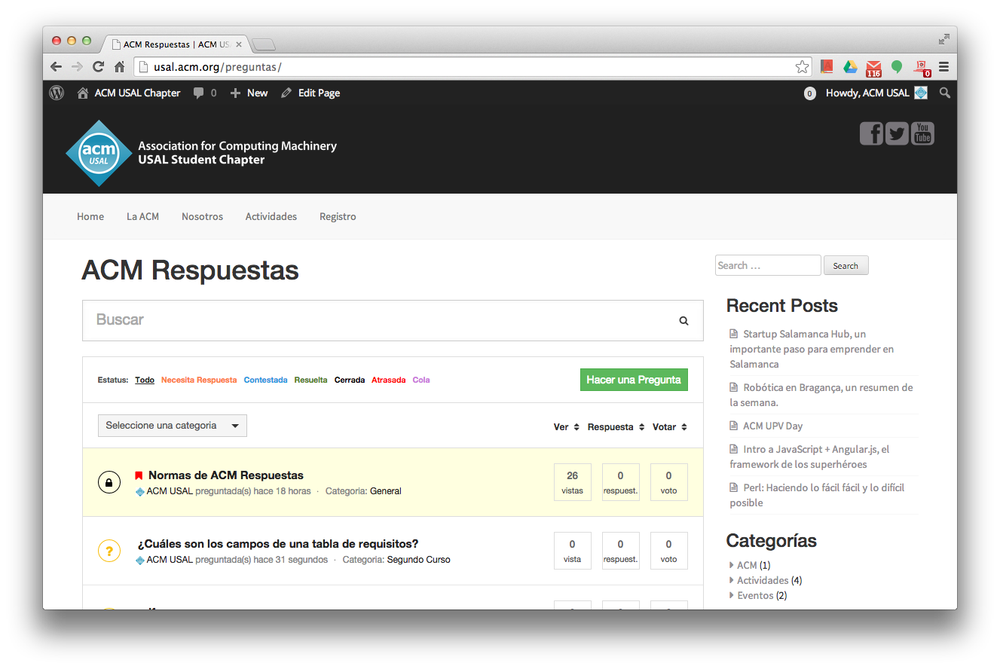

ACM USAL
Capítulo de Estudiantes de la Universidad de Salamanca
Association for Computing Machinery
Promoción y divulgación de la Informática a nivel mundial.
ACM Salamanca
Talleres, charlas, colaboraciones...
- 
- 
- 
- 
- 
- 
Robótica, Web, Inteligencia Artificial, Servidores, Lenguajes de Programación...
Equipo
43 personas... ¡y creciendo!
One more thing...
ACM es más que promocionar la Informática
A veces la mejor ayuda es tu compañero
Motivación
Hemos aprendido mucho de nuestra experiencia en la USAL.
Muchas dudas, y a veces es difícil solucionarlas.
Foros, bibliografía, tutorías... a veces no son suficientes
ACM Respuestas
ACM Respuestas
Una plataforma de preguntas y respuestas mantenida por estudiantes de la USAL, para estudiantes de la USAL
Dudas sobre tu práctica, la asignatura que estás cursando, qué optativa elegir...
Una comunidad autorregulada
Completamente abierto
- Login con Facebook, Twitter y Google
- No está restringido a estudiantes de la USAL, todo el que quiera puede participar
- Las mejores respuestas se eligen mediante un sistema de votación
¿Quieres unirte?
Inscríbete gratis en usal.acm.org/registro
- Acceso gratuito a publicaciones, noticias, eBooks, cursos en línea...
- Buen ambiente, aprendes cosas que no aprenderás en clase...
Llegado a un punto una carga no se puede llevar solo y cuanto más alto quieras llevar esa carga, más ayuda vas a necesitar.